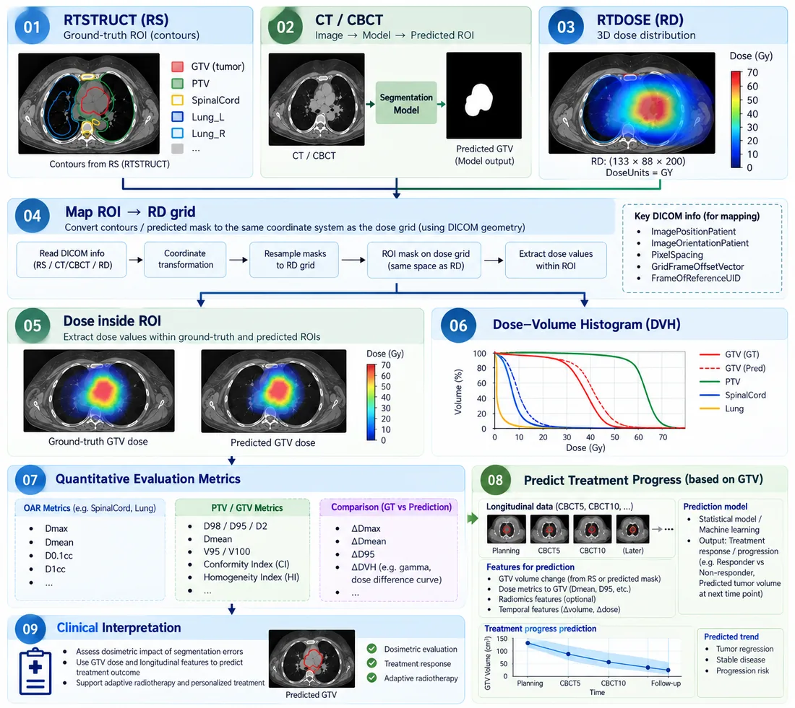

CBCT-guided adaptive radiotherapy for rectal cancer
Methods that register and contour daily cone-beam CT reliably, and flag when the result should not be trusted.
- Status
- In progress, since Mar 2026
- Collaborators
- Dr. Duong Thanh Tai (Spencer Hospital), Dr. Dat Tran (Louisiana State University)
- Methods
- Optimal transport, conformal prediction, deep learning
The problem
In adaptive radiotherapy, a cone-beam CT (CBCT) is taken before each treatment fraction and compared with the planning CT. For rectal cancer this comparison is hard: rectal gas appears and disappears, the bladder fills to different volumes, and CBCT has lower contrast and more artifacts than CT.
Two steps suffer most. Deformable registration assumes every voxel in one scan maps to a voxel in the other, which is false when gas is created or removed. Auto-contouring gives no reliable signal of when it has failed, so physicians must re-check every structure while the patient waits on the couch.
Gas-aware registration
I model the daily anatomy as a smooth deformation of the planning CT plus a source term that can create or remove mass in gas and bladder regions.
- The deformation is diffeomorphic (stationary velocity fields), so it cannot fold or tear tissue.
- The source term is penalized with a Wasserstein–Fisher–Rao (unbalanced optimal transport) cost, weighted lower inside a predicted gas mask.
- A network predicts both fields in one pass, trained without ground-truth deformations, and is benchmarked against VoxelMorph, TransMorph and B-spline registration.
Risk-controlled segmentation
I wrap segmentation models (Swin UNETR and Bayesian deep ensembles) in conformal risk control. Instead of a single contour, each structure gets an inner and outer band with a finite-sample guarantee, for example on the expected volume of CTV missed.
- Mondrian conformal prediction keeps the guarantee within subgroups: per structure, per slice region and by gas presence.
- Weighted conformal prediction handles distribution shift between planning CT and CBCT, and between scanners.
- Calibration is done at the patient level, since fractions from the same patient are not independent.
- Wide bands flag the contours that a radiation oncologist should review first.
Dose-aware evaluation
Geometric scores like Dice do not say whether an error matters clinically. Neural dose surrogates, bilevel optimization and a differentiable DVH loss are used to estimate how residual registration and segmentation errors change the delivered dose.

Data and evaluation
- Public data: SynthRAD2025 and COBRA2026 pelvic CT/CBCT, plus institutional rectal cases with expert contours and dose records, subject to availability.
- Registration metrics: Dice and HD95 of propagated contours, Jacobian folding, dose-accumulation error, stratified by gas volume.
- Segmentation metrics: empirical coverage against target, band width, and how well band width flags failed contours.
This is ongoing research. No clinical validation is implied, and results will be added once they are verified.